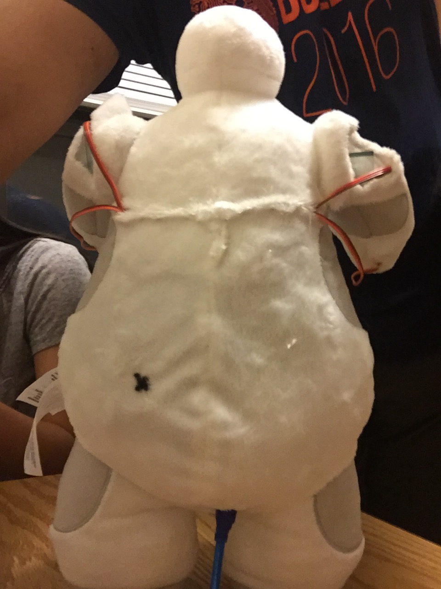

instructions
List of Materials:
- Arduino IDE
- Baymax Doll
- Arduino Starter Kit
- Lithium Ion Polymer Batteries
- Arduino Standard Servos (x2)
- Arduino Continuous Rotation Micro Servos (x4)
- (Needle, Thread, Scissors, Super Glue)
=======
- Purchase your very own Baymax doll from the link above.
- Cut small slits in his arms so that pieces of the dimensions below can snugly fit inside. Cut a 1-inch slit on each shoulder, as shown below. Then cut 1/2-inch slits underneath his palms and at his elbow positions on each arm.
- Use the dimensions above to laser cut pieces for all 3 components of the arm (shoulder -> elbow -> wrist). The dxf file to use with the laser cut program has been made accessible to you and can be found in the "lasercut" folder in the github repository (link provided in Links section). Make 2 sets of the cuts - 1 for each arm.
- Glue the servo horns of your choice, and attach the servos and glue the acrylic pieces in the manner shown in these pictures
- Attach the servo horns of the big servos to the round knobs at the shoulders of the Baymax plush doll.
Use the following schematic to guide you in wiring the servos to the Arduino. The code provided in the github repository file "SmallServo.ino" follows this schematic. If you decide to change which pins you connect to the servos, make sure those changes are reflected in the file you upload to the Arduino as well.

- Allow the wires coming out of the servos to exit the doll through the slits you have cut. Connect the orange line of each servo to a pin in the Arduino, and the red and black wires to the 5V and Ground pins coming from the Arduino, respectively.
- Connect the 2 buttons, along with 10K ohm resistors for each, as shown in the diagram.
- Connect Li-Ion/LiPoly Batteries as necessary, to allow Baymax to live longer.
- Upload your code to the Arduino.
The code that we have made available to you allows Baymax to use his shoulders to lift his arms up and perform a hugging action using the elbow and wrist joints. Using these 3 contact points, you can make Baymax perform many different actions, some of which can be seen on this website (e.g. handshaking). Use these steps as a starting point and give yourself an opportunity for your creativity to roam free!
- OPTIONAL: Use a needle and thread to sew Baymax into the seamless, non-obstructive doll that he once was. In the picture below, the Arduino, along with the breadboard, buttons, cables, and batteries have been tucked into the pouch we created on his back. We also cut a slit at the bottom of Baymax, and positioned the Arduino so that he can be easily plugged into a laptop. This allows you to easily upload code to him, even without direct access to the electronics.

Note: If you proceed with this step, make sure to have an effecient way of replacing the batteries that you have connected, as they will run out of charge. Another pouch on the back, with easy access to place and remove the batteries, should do the trick!